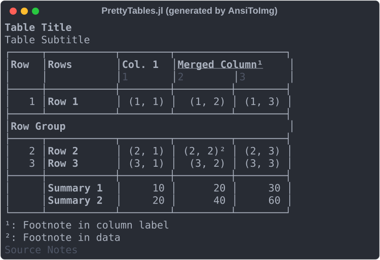

Quick Start
Printing a Table
The function pretty_table prints vectors, matrices, dictionaries, and any object that complies with the Tables.jl API:
julia> data = Any[1 true 1.0; 2 false 2.0; 3 true 3.0];julia> pretty_table(data)┌────────┬────────┬────────┐ │ Col. 1 │ Col. 2 │ Col. 3 │ ├────────┼────────┼────────┤ │ 1 │ true │ 1.0 │ │ 2 │ false │ 2.0 │ │ 3 │ true │ 3.0 │ └────────┴────────┴────────┘julia> pretty_table(data; column_labels = ["Index", "Flag", "Value"])┌───────┬───────┬───────┐ │ Index │ Flag │ Value │ ├───────┼───────┼───────┤ │ 1 │ true │ 1.0 │ │ 2 │ false │ 2.0 │ │ 3 │ true │ 3.0 │ └───────┴───────┴───────┘
If the data is a Tables.jl source, the column names and types are used as the column labels:
julia> table = (Index = 1:3, Flag = [true, false, true], Value = [1.0, 2.0, 3.0]);julia> pretty_table(table)┌───────┬───────┬─────────┐ │ Index │ Flag │ Value │ │ Int64 │ Bool │ Float64 │ ├───────┼───────┼─────────┤ │ 1 │ true │ 1.0 │ │ 2 │ false │ 2.0 │ │ 3 │ true │ 3.0 │ └───────┴───────┴─────────┘
If the first argument is String, the table is returned as a string instead of being printed:
julia> str = pretty_table(String, data; column_labels = ["Index", "Flag", "Value"]);julia> print(str)┌───────┬───────┬───────┐ │ Index │ Flag │ Value │ ├───────┼───────┼───────┤ │ 1 │ true │ 1.0 │ │ 2 │ false │ 2.0 │ │ 3 │ true │ 3.0 │ └───────┴───────┴───────┘
Table Sections
The following command prints the table in matrix using the text back end with all the available sections:
julia> matrix = [(i, j) for i in 1:3, j in 1:3];
julia> pretty_table(
matrix;
column_labels = [["Col. $i" for i in 1:3], ["$i" for i in 1:3]],
footnotes = [(:column_label, 1, 2) => "Footnote in column label", (:data, 2, 2) => "Footnote in data"],
merge_column_label_cells = [MergeCells(1, 2, 2, "Merged Column", :c)],
row_group_labels = [2 => "Row Group"],
row_labels = ["Row $i" for i in 1:3],
show_row_number_column = true,
source_notes = "Source Notes",
stubhead_label = "Rows",
subtitle = "Table Subtitle",
summary_rows = [(data, i) -> 10i, (data, i) -> 20i],
title = "Table Title",
)
For more information about how to specify each section, see Usage.
Formatting and Styling
The formatters change how the values are converted to strings, whereas the highlighters, the table style, and the table format change how the table is decorated. The following objects are backend-agnostic, meaning that they work with every back end:
Highlighter: decorates the data cells that satisfy a condition.TableStyle: decorates each table section.TableFormat: selects which lines are drawn and their design.
The decorations are described by the Face objects of StyledStrings.jl (see Faces). Each back end renders the attributes it supports. For example, the Markdown back end renders the bold text but ignores the colors.
julia> data = [f(a) for a in 0:30:90, f in (sind, cosd, tand)];julia> highlighter = Highlighter( (data, i, j) -> data[i, j] > 1, Face(; weight = :bold, foreground = :red) );julia> style = TableStyle(; first_line_column_label = Face(; weight = :bold, foreground = :blue));julia> table_format = TableFormat(; @no_vertical_lines);julia> pretty_table( data; column_labels = ["sin", "cos", "tan"], formatters = [fmt__printf("%5.3f")], highlighters = [highlighter], row_labels = ["$(a)°" for a in 0:30:90], style, table_format, )────────────────────────── sin cos tan ────────────────────────── 0° 0.000 1.000 0.000 30° 0.500 0.866 0.577 60° 0.866 0.500 1.732 90° 1.000 0.000 Inf ──────────────────────────
Changing the Back End
The keyword backend selects the back end. Since the objects in the previous example are backend-agnostic, the same configuration renders the table in any back end:
julia> pretty_table( data; backend = :markdown, column_labels = ["sin", "cos", "tan"], formatters = [fmt__printf("%5.3f")], highlighters = [highlighter], row_labels = ["$(a)°" for a in 0:30:90], style, table_format, )| | **sin** | **cos** | **tan** | |--------:|--------:|--------:|----------:| | **0°** | 0.000 | 1.000 | 0.000 | | **30°** | 0.500 | 0.866 | 0.577 | | **60°** | 0.866 | 0.500 | **1.732** | | **90°** | 1.000 | 0.000 | **Inf** |julia> pretty_table( data; backend = :latex, column_labels = ["sin", "cos", "tan"], formatters = [fmt__printf("%5.3f")], highlighters = [highlighter], row_labels = ["$(a)°" for a in 0:30:90], style, table_format, )\begin{tabular}{rrrr} \hline & \textcolor[HTML]{195EB3}{\textbf{sin}} & \textcolor[HTML]{195EB3}{\textbf{cos}} & \textcolor[HTML]{195EB3}{\textbf{tan}} \\ \hline \textbf{0°} & 0.000 & 1.000 & 0.000 \\ \textbf{30°} & 0.500 & 0.866 & 0.577 \\ \textbf{60°} & 0.866 & 0.500 & \textcolor[HTML]{A51C2C}{\textbf{1.732}} \\ \textbf{90°} & 1.000 & 0.000 & \textcolor[HTML]{A51C2C}{\textbf{ Inf}} \\ \hline \end{tabular}
Each back end also has native objects (for example, TextTableFormat and HtmlTableStyle), which expose all its options. For more information, see the pages in Back Ends.